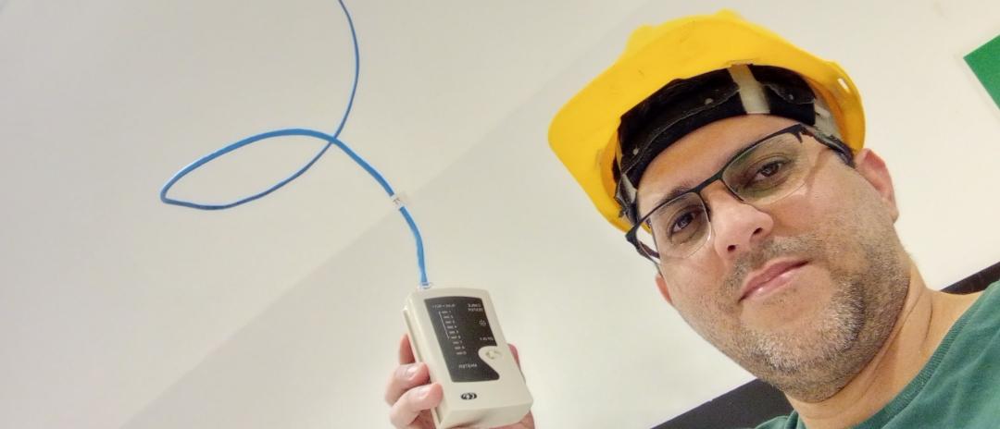
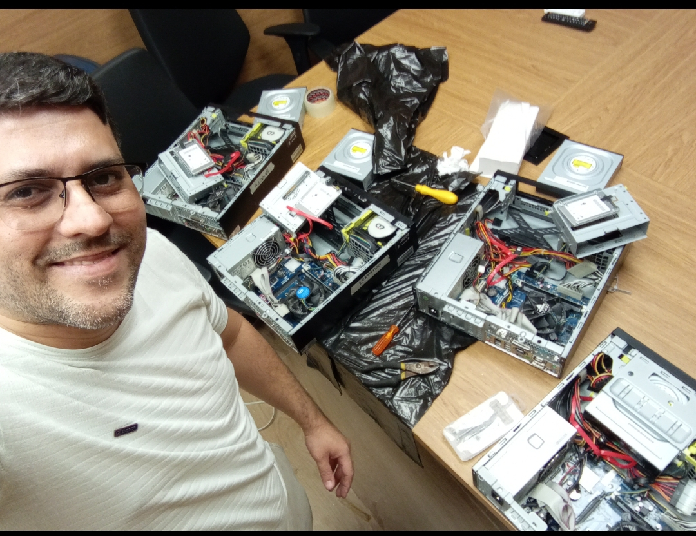
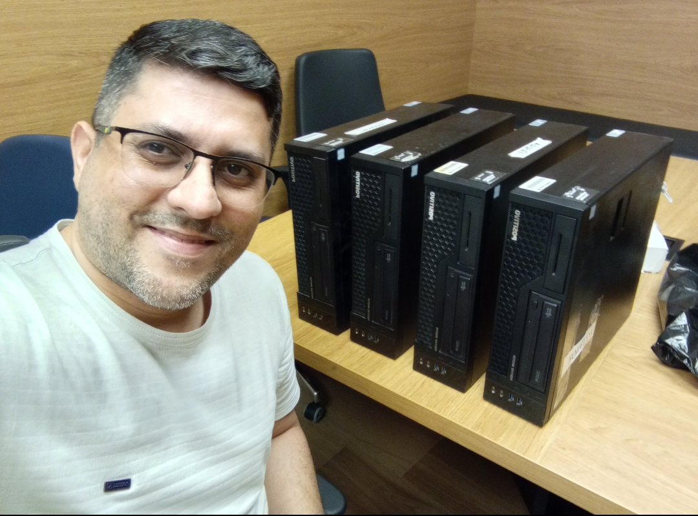
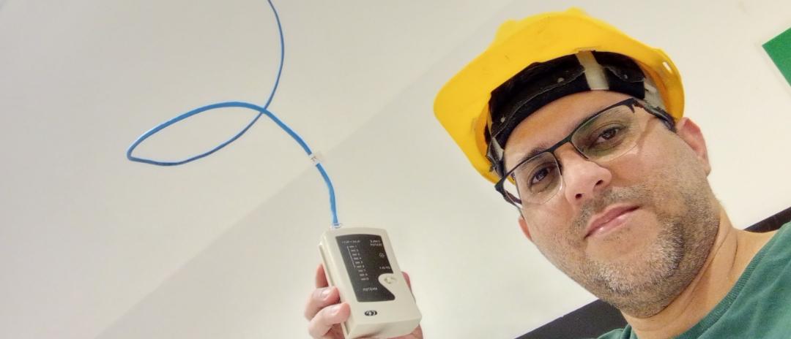
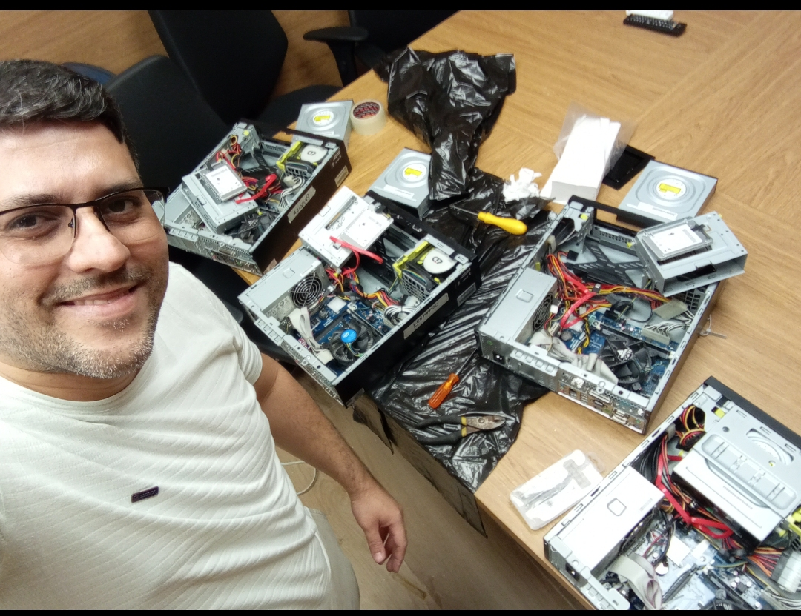
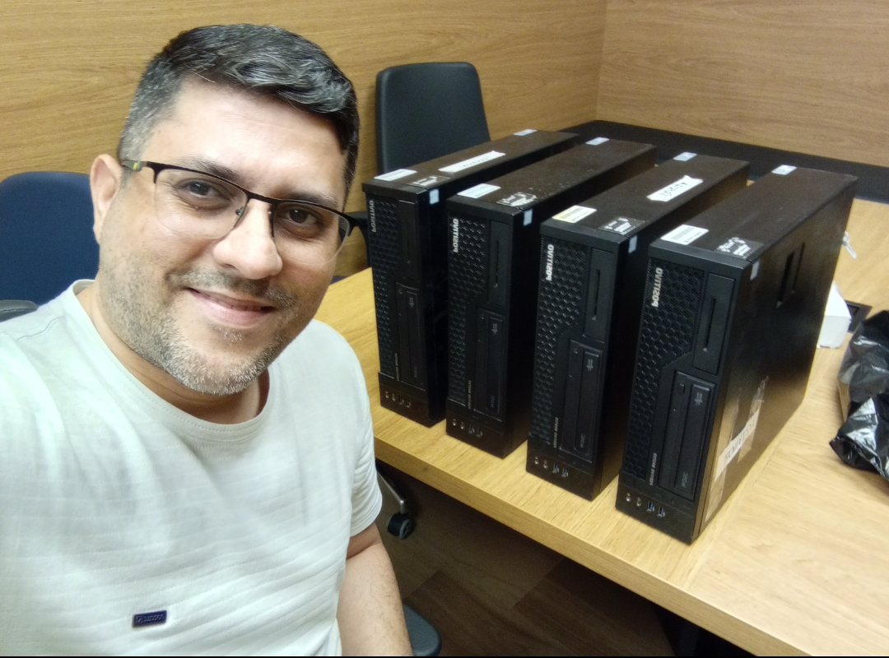
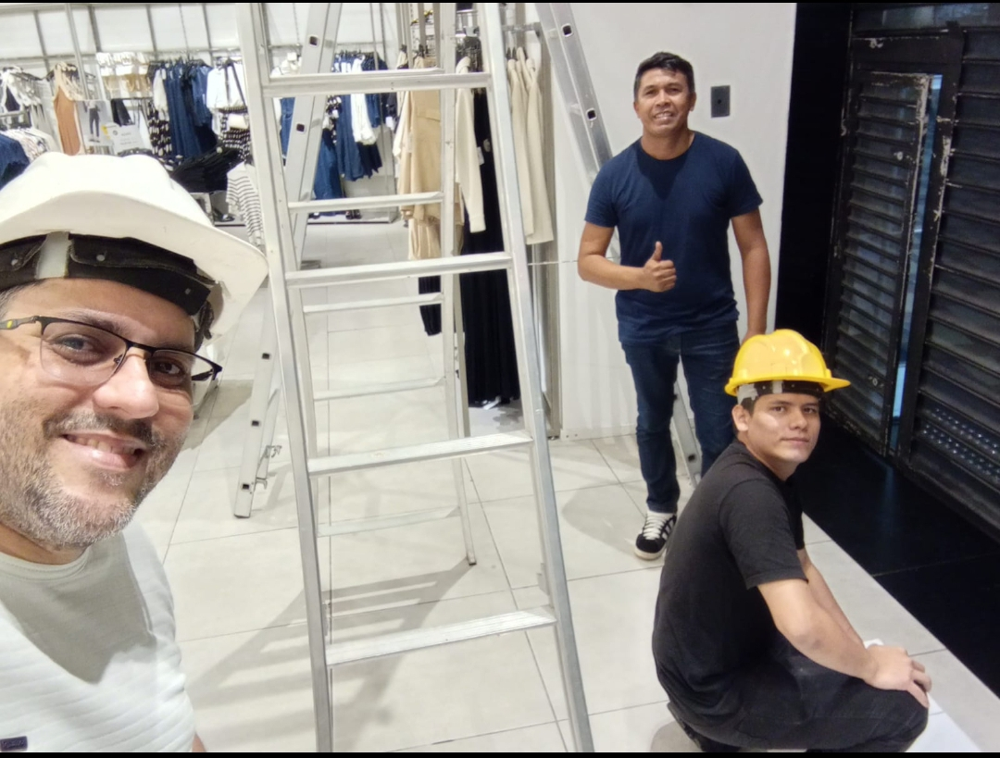
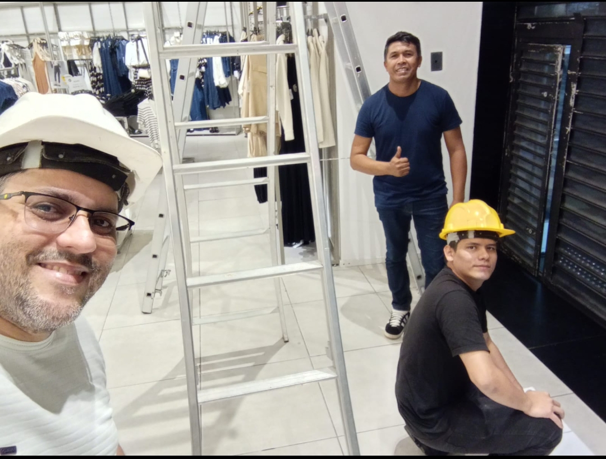

Sobre Mim
Profissional de Tecnologia da Informação com sólida experiência em suporte técnico, field service e manutenção de equipamentos, atuando em ambientes corporativos de médio e grande porte. Possui forte conhecimento em diagnóstico e resolução de problemas de hardware e software, instalação e configuração de sistemas operacionais, preparo de máquinas, backup, restauração e suporte ao usuário final. Atua com atendimento técnico presencial e remoto, seguindo boas práticas de TI, cumprimento de SLA, registro de chamados, elaboração de relatórios técnicos e controle de inventário. Possui experiência em contratos com grandes instituições, incluindo Banco Santander e Banco do Brasil, demonstrando responsabilidade, autonomia e confiabilidade no manuseio de ativos corporativos. Atualmente em formação em Análise e Desenvolvimento de Sistemas, ampliando conhecimentos em lógica de programação, automação e desenvolvimento de soluções tecnológicas, o que agrega visão analítica e capacidade de integração entre suporte técnico e tecnologia aplicada. Profissional organizado, comunicativo e focado em resultados, com facilidade de adaptação, aprendizado contínuo e forte compromisso com a qualidade no atendimento e na resolução de problemas.
Experiência Profissional
Técnico de Campo (Freelancer) | Fertemtech / Cerb Solutions – Banco Santander
Nov 2025 – Atual • Manaus – AM- Manutenção corretiva e preventiva de computadores e periféricos
- Suporte técnico ao usuário corporativo
- Instalação, configuração e substituição de notebooks e equipamentos
- Formatação, backup, restauração e preparação de máquinas
- Diagnóstico e solução de falhas em hardware e software
- Testes, organização e análises básicas de rede local
- Registro de chamados, elaboração de relatórios técnicos e controle de inventário
- Cumprimento de SLA e aplicação de boas práticas de atendimento
Obs.: O papel de Ponto Técnico Regional nesta empresa já está contemplado pela Ônix Suporte e Tecnologia, evitando duplicidade de atribuições.
Técnico de Campo (Freelancer) | Ônix Suporte e Tecnologia / Cerb Solutions – Banco Santander / Positivo – Banco do Brasil
Jan 2025 – Atual • Manaus – AM- Diagnóstico e reparo de computadores e notebooks
- Suporte técnico remoto e presencial
- Instalação de sistemas operacionais e softwares
- Testes de funcionamento e validação técnica dos equipamentos
Responsabilidades adicionais (confiança operacional):
- Atuação como ponto técnico regional, com recebimento, conferência e preparação de equipamentos corporativos
- Responsabilidade direta sobre ativos enviados à base local
- Demonstração de autonomia, confiabilidade e zelo patrimonial
Habilidades Técnicas
Soft Skills
Idiomas
Cursos e Certificações
- Informática Avançada — SENAI
- Montagem e Configuração — SENAI
- Fundamentos de TI — Fundação Bradesco
- Introdução a Redes — Fundação Bradesco
- Segurança em TI — Fundação Bradesco
- Comunicação Não Violenta — ENAP
- Inteligência Emocional — Fundação Bradesco
- Gestão do Tempo — SEST SENAT
Galeria de Serviços
 





 
